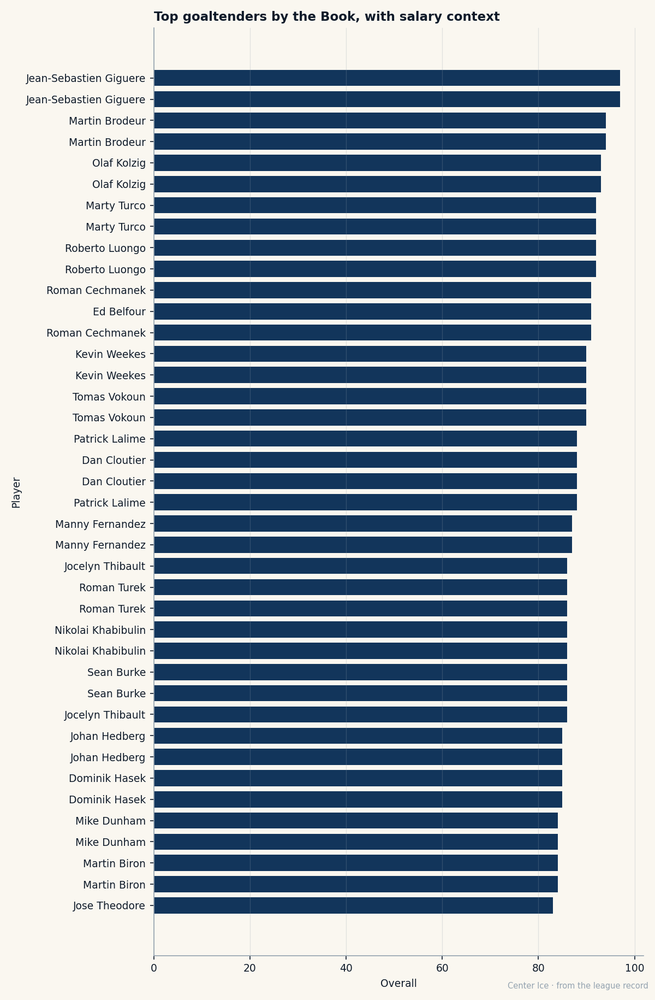
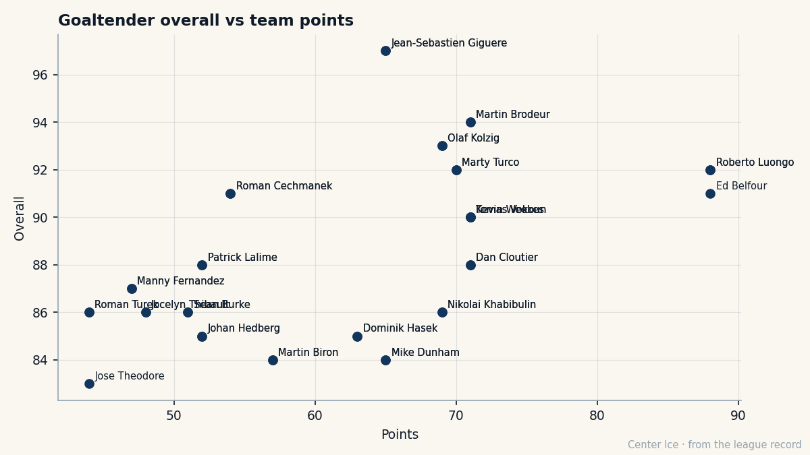

At 27, We Finally Know Who He Is: Jean-Sebastien Giguere, 97 on the Book, and $0.80M in His Pocket
The highest-rated goaltender in the league came to Anaheim for a second-round pick in 2000. His contract expires in June.
 Carol BinghamFeatures writer · Rinkside
Carol BinghamFeatures writer · RinksideThe Bureau's Book has a number at the top of the goaltending column this February, and it belongs to a man making $0.80M on a team that plays in front of 14520 people at $79 a seat.  Jean-Sebastien Giguere97 is 97 on the Book, three points ahead of the next goaltender, and his contract has one year on it. That year is this one.
Jean-Sebastien Giguere97 is 97 on the Book, three points ahead of the next goaltender, and his contract has one year on it. That year is this one.
 Mighty Ducks of Anaheim sits at $41.01M in payroll and 65 points. The per-point line reads $0.63M, which is the third-cheapest in the league. A lot of that arithmetic is Giguere: the highest-rated goaltender in the sport, on the salary of a fourth-liner, holding a 2.61 goals-against average and a .873 save percentage through 47 games.
Mighty Ducks of Anaheim sits at $41.01M in payroll and 65 points. The per-point line reads $0.63M, which is the third-cheapest in the league. A lot of that arithmetic is Giguere: the highest-rated goaltender in the sport, on the salary of a fourth-liner, holding a 2.61 goals-against average and a .873 save percentage through 47 games.

The road to that number ran through the AHL for four years. Hartford took him 13th overall in 1995 with a pick it got from New York for Pat Verbeek. He played eight NHL games for the Whalers, then the Whalers left Hartford. Carolina traded him to Calgary in August 1997 for  Gary Roberts88 and Trevor Kidd. He spent 1997-98 in Saint John in the AHL, posting a 2.46 GAA and a .926 save percentage in 31 games, then spent 1998-99 and 1999-2000 mostly there too, making 15-game and 7-game appearances with Calgary between stints.
Gary Roberts88 and Trevor Kidd. He spent 1997-98 in Saint John in the AHL, posting a 2.46 GAA and a .926 save percentage in 31 games, then spent 1998-99 and 1999-2000 mostly there too, making 15-game and 7-game appearances with Calgary between stints.
On June 10, 2000, Anaheim traded a second-round pick for him. That pick became Matt Pettinger in Washington. Giguere spent the start of 2000-01 in Cincinnati, got called up, and finished the season as Anaheim's goaltender. In 2001-02 he played 53 games with a 2.13 GAA. In 2002-03 he went 34-22 and posted eight shutouts, and the Ducks made the playoffs as the seventh seed in the West.
They lost the Cup Final. Giguere won the Conn Smythe.
The extension came in September 2003. Four years, $0.80M a year, the reward for the longest playoff run in the franchise's short history. Then 2003-04: 30 wins, 36 losses, 213 goals against, and Anaheim missed the playoffs. His morale on the Book today is 94, but you can read the year by the losses.
Five 99s and a toughness of 50
Open his page on the Book and the top of the column reads like a caricature of what a goaltender is. Positioning 99. Agility 99. Lateral push 99. Set 99. Shot stop 99. Shot left 97. He stops the puck with every part of his body except his backbone.
His toughness reads 50. His fighting reads 51. His flop reads 51. The lowest three numbers on his card, sitting there like a warning label. He is 5 feet 11, 199 pounds, shoots left, and the Book says he will not engage you. He will simply be in the right place at the right time and close the hole before your stick finds it.
 Sergei Fedorov90, the other 90-plus player on the roster, makes $6.30M. Giguere makes $0.80M. The gap between them on the Book is seven points. The gap between them on the payroll sheet is $5.50M.
Sergei Fedorov90, the other 90-plus player on the roster, makes $6.30M. Giguere makes $0.80M. The gap between them on the Book is seven points. The gap between them on the payroll sheet is $5.50M.

The team around him
Anaheim's roster is a study in what one good contract does for a thin room. Fedorov is 90 and leads the league in goals with 57. After him, the next-best player on the depth chart is  Vaclav Prospal80 at 80, then
Vaclav Prospal80 at 80, then  Erik Cole79 at 79, then
Erik Cole79 at 79, then  Niclas Havelid77 at 77. There are six players above 75 and the rest is work. The payroll is $41.01M, which is the fifth-lowest in the league, and the profit is $27.30M, which is the fourth-highest. The room does not buy its way to 65 points. It finds them, mostly in front of a net that Giguere has been guarding at .873 since October.
Niclas Havelid77 at 77. There are six players above 75 and the rest is work. The payroll is $41.01M, which is the fifth-lowest in the league, and the profit is $27.30M, which is the fourth-highest. The room does not buy its way to 65 points. It finds them, mostly in front of a net that Giguere has been guarding at .873 since October.
His Development Index reads +3 above his base of 93, which puts him at 97 on the current edition. That is the second-highest form reading of any goaltender this season, behind only the form that has kept Brodeur at 94. Giguere's base went up from whatever the Book had for him in 2003, and now the form is on top of the base. The Index says he is playing above what the Bureau thought he was.
What June will cost
The contract expires. There are zero years left after this one. Anaheim has $41.01M committed to 30 players and a 27-year-old Conn Smythe winner who will hit the market in 140 days. The league's highest-paid goaltender is  Ed Belfour93 at $6.50M, and he is 39. The cheapest elite one right now is
Ed Belfour93 at $6.50M, and he is 39. The cheapest elite one right now is  Marty Turco94 at $0.60M, also in a contract year, also expiring, also carrying a club. The market for goaltenders who are good is small. The market for goaltenders who are the best is smaller.
Marty Turco94 at $0.60M, also in a contract year, also expiring, also carrying a club. The market for goaltenders who are good is small. The market for goaltenders who are the best is smaller.
What Anaheim will do with this is the question that matters for the per-point line. If Giguere re-signs at something closer to what his number on the Book says, the $0.63M per point goes up. If he walks, the Ducks have a 65-point season without the man between the pipes who kept it alive while Fedorov scored 57 goals and the rest of the room watched.
He was traded to Anaheim for a second-round pick on a June afternoon in 2000. Five years later the Bureau has him at 97, three ahead of anyone else at his position, and his contract reads one year. The second-round pick became Matt Pettinger, who scored 26 points in 143 games for Washington.
He is 27. The Book has caught up. The question is whether the payroll can.